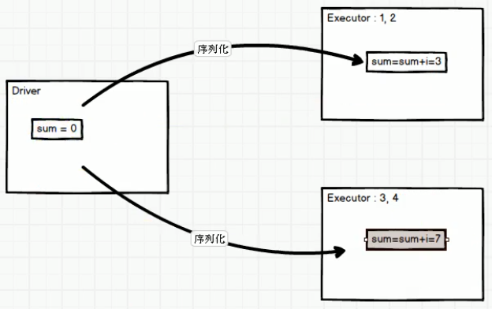
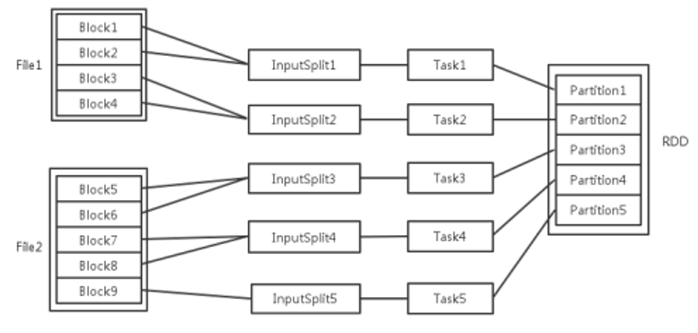

SparkCore
RDD编程进阶
Spark三大数据结构：RDD（分布式数据集）、广播变量（分布式只读共享变量）、累加器（分布式只写共享变量）
累加器
累加器用来对信息进行聚合，通常在向 Spark传递函数时，比如使用 map() 函数或者用 filter() 传条件时，可以使用驱动器程序中定义的变量，但是集群中运行的每个任务都会得到这些变量的一份新的副本，更新这些副本的值也不会影响驱动器中的对应变量。如果我们想实现所有分片处理时更新共享变量的功能，那么累加器可以实现我们想要的效果。
系统累加器
针对一个输入的日志文件，如果我们想计算文件中所有空行的数量，我们可以编写以下程序：
package com.swenchao.spark
import java.sql.{Connection, DriverManager, PreparedStatement}
import org.apache.spark.rdd.RDD
import org.apache.spark.util.LongAccumulator
import org.apache.spark.{SparkConf, SparkContext}
/**
* @Author: Swenchao
* @Date: 2020/10/04 下午 19:33
* @Func: 分布式共享数据
*/
object Spark20_ShareData {
def main(args: Array[String]): Unit = {
val conf: SparkConf = new SparkConf().setMaster("local[*]").setAppName("WordCount")
// 创建Spark上下文对象
val sc: SparkContext = new SparkContext(conf)
val dataRDD: RDD[Int] = sc.makeRDD(List(1, 2, 3, 4), 2)
// 累加求和
// val sum: Int = dataRDD.reduce(_ + _)
// println(sum)
// 简化(错误版本)：下面这样是不能实现的，因为我们的dataRDD是两个分区，但是sum现在在driver中，所以序列化分别传到两个分区中后是
// 相互隔离的，在两个分区中分别求和后没法再两个分区相加。另外在分别求完和后的sum也没法从两个分区传回driver，所以没法实现。
// var sum:Int = 0
// dataRDD.foreach(i => {
// sum = sum + i
// })
// println(sum)
// 简化(正确版本)：使用累加器
// 创建累加器对象
val accumulator: LongAccumulator = sc.longAccumulator
dataRDD.foreach{
case i => {
// 执行累加器
accumulator.add(i)
}
}
println(accumulator.value)
sc.stop()
}
}通过在驱动器中调用 SparkContext.accumulator(initialValue) 方法，创建出存有初始值的累加器。返回值为 org.apache.spark.Accumulator[T] 对象，其中 T 是初始值 initialValue 的类型。Spark闭包里的执行器代码可以使用累加器的 += 方法(在Java中是 add)增加累加器的值。 驱动器程序可以调用累加器的value属性(在Java中使用value()或setValue())来访问累加器的值。
注意：工作节点上的任务不能访问累加器的值。从这些任务的角度来看，累加器是一个只写变量。
对于要在行动操作中使用的累加器，Spark只会把每个任务对各累加器的修改应用一次。因此，如果想要一个无论在失败还是重复计算时都绝对可靠的累加器，我们必须把它放在 foreach() 这样的行动操作中。转化操作中累加器可能会发生不止一次更新。
补：

其中反映了driver中的sum为何不会变化的原因（sum只会从driver序列化到executor中，但是在做了操作后不会返回到driver中）
自定义累加器
自定义累加器类型的功能在1.X版本中就已经提供了，但是使用起来比较麻烦，在2.0版本后，累加器的易用性有了较大的改进，而且官方还提供了一个新的抽象类：AccumulatorV2来提供更加友好的自定义类型累加器的实现方式。实现自定义类型累加器需要继承AccumulatorV2并至少覆写下例中出现的方法，下面这个累加器可以用于在程序运行过程中收集一些文本类信息，最终以Set[String]的形式返回。
package com.swenchao.spark
import java.util
import org.apache.spark.rdd.RDD
import org.apache.spark.util.{AccumulatorV2, LongAccumulator}
import org.apache.spark.{SparkConf, SparkContext}
/**
* @Author: Swenchao
* @Date: 2020/10/04 下午 19:59
* @Func: 自定义累加器
*/
object Spark21_Accumulator {
def main(args: Array[String]): Unit = {
val conf: SparkConf = new SparkConf().setMaster("local[*]").setAppName("WordCount")
// 创建Spark上下文对象
val sc: SparkContext = new SparkContext(conf)
val dataRDD: RDD[String] = sc.makeRDD(List("Hadoop", "Hive", "HBase", "Scala", "Spark"), 2)
// TODO 创建累加器
val wordAccumulator = new WordAccumulator()
// TODO 注册累加器
sc.register(wordAccumulator)
dataRDD.foreach{
case word => {
// 执行累加器
wordAccumulator.add(word)
}
}
// TODO 获取累加器值
println(wordAccumulator.value)
sc.stop()
}
}
/**
* 声明累加器
* 1. 继承 AccumulatorV2
* 2. 实现抽象方法
* 3. 创建累加器
*/
class WordAccumulator extends AccumulatorV2[String, util.ArrayList[String]] {
val list = new util.ArrayList[String]()
// 当前累加器是否为初始化状态
override def isZero: Boolean = list.isEmpty
// 复制累加器
override def copy(): AccumulatorV2[String, util.ArrayList[String]] = {
new WordAccumulator()
}
// 重置累加器
override def reset(): Unit = {
list.clear()
}
// 向累加器中增加数据
override def add(v: String): Unit = {
if (v.contains("H")) {
list.add(v)
}
}
// 合并累加器
override def merge(other: AccumulatorV2[String, util.ArrayList[String]]): Unit = {
list.addAll(other.value)
}
// 获取累加器结果
override def value: util.ArrayList[String] = list
}广播变量（调优策略）
广播变量用来高效分发较大的对象。向所有工作节点发送一个较大的只读值，以供一个或多个Spark操作使用。比如，如果你的应用需要向所有节点发送一个较大的只读查询表，甚至是机器学习算法中的一个很大的特征向量，广播变量用起来都很顺手。 在多个并行操作中使用同一个变量，但是 Spark会为每个任务分别发送。
scala> val broadcastVar = sc.broadcast(Array(1, 2, 3))
——>
broadcastVar: org.apache.spark.broadcast.Broadcast[Array[Int]] = Broadcast(35)
scala> broadcastVar.value
——>
res1: Array[Int] = Array(1, 2, 3)使用广播变量的过程如下：
(1) 通过对一个类型 T 的对象调用 SparkContext.broadcast 创建出一个 Broadcast[T] 对象。 任何可序列化的类型都可以这么实现。
(2) 通过 value 属性访问该对象的值(在 Java 中为 value() 方法)。
(3) 变量只会被发到各个节点一次，应作为只读值处理(修改这个值不会影响到别的节点)。
扩展
RDD相关概念关系

输入可能以多个文件的形式存储在HDFS上，每个File都包含了很多块，称为Block。当Spark读取这些文件作为输入时，会根据具体数据格式对应的InputFormat进行解析，一般是将若干个Block合并成一个输入分片，称为InputSplit，注意InputSplit不能跨越文件。随后将为这些输入分片生成具体的Task。InputSplit与Task是一一对应的关系。随后这些具体的Task每个都会被分配到集群上的某个节点的某个Executor去执行。
1) 每个节点可以起一个或多个Executor。
2) 每个Executor由若干core组成，每个Executor的每个core一次只能执行一个Task。
3) 每个Task执行的结果就是生成了目标RDD的一个partiton。
注意： 这里的core是虚拟的core而不是机器的物理CPU核，可以理解为就是Executor的一个工作线程。而 Task被执行的并发度 = Executor数目 * 每个Executor核数。至于partition的数目：
1) 对于数据读入阶段，例如sc.textFile，输入文件被划分为多少InputSplit就会需要多少初始Task。
2) 在Map阶段partition数目保持不变。
3) 在Reduce阶段，RDD的聚合会触发shuffle操作，聚合后的RDD的partition数目跟具体操作有关，例如repartition操作会聚合成指定分区数，还有一些算子是可配置的。
RDD在计算的时候，每个分区都会起一个task，所以rdd的分区数目决定了总的的task数目。申请的计算节点（Executor）数目和每个计算节点核数，决定了你同一时刻可以并行执行的task。
比如的RDD有100个分区，那么计算的时候就会生成100个task，你的资源配置为10个计算节点，每个两2个核，同一时刻可以并行的task数目为20，计算这个RDD就需要5个轮次。如果计算资源不变，你有101个task的话，就需要6个轮次，在最后一轮中，只有一个task在执行，其余核都在空转。如果资源不变，你的RDD只有2个分区，那么同一时刻只有2个task运行，其余18个核空转，造成资源浪费。这就是在spark调优中，增大RDD分区数目，增大任务并行度的做法。